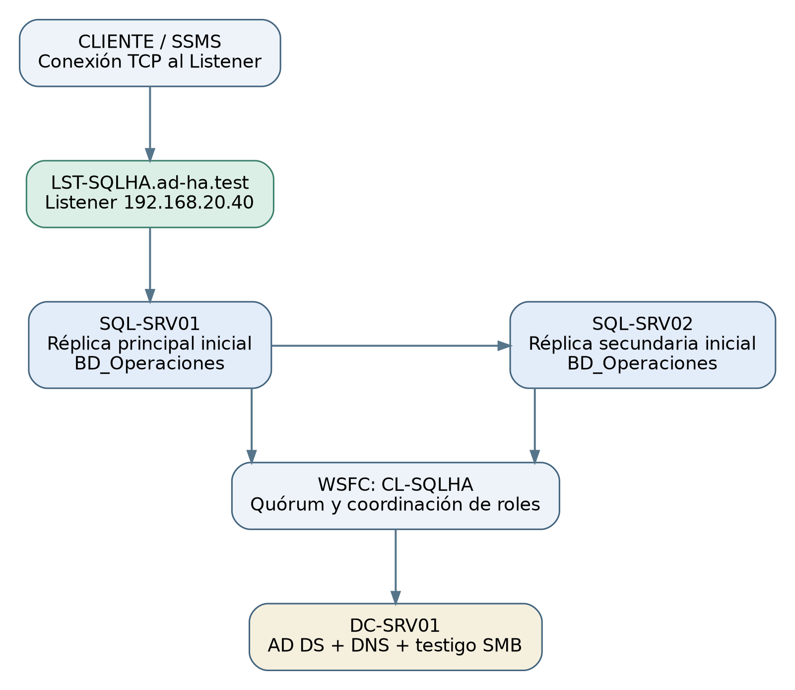

Acceso mínimo
Roles diferenciados, cuentas dedicadas y filtrado de tráfico por origen, destino y servicio.
Diseño de una arquitectura de alta disponibilidad en Microsoft SQL Server 2022 mediante Always On Availability Groups y Windows Server Failover Clustering.
Diseño documentado y verificación estática ejecutada. Pruebas reales de SQL Server pendientes de Unidad III.
Una instancia SQL Server aislada constituye un punto único de fallo. Su indisponibilidad puede interrumpir pedidos, consultas y operaciones transaccionales. El caso estudiado es académico y simulado; no representa datos obtenidos en una empresa real.
El diseño usa dos instancias independientes, un grupo de disponibilidad, un Listener y un clúster Windows. Se diferencian las metas de disponibilidad de los resultados que todavía no se han medido.
Selecciona una vista. Las figuras describen el diseño propuesto, no capturas de un sistema ya implementado.

Roles diferenciados, cuentas dedicadas y filtrado de tráfico por origen, destino y servicio.
Copias fuera del almacenamiento exclusivo de las réplicas y pruebas de restauración.
DMV, eventos de WSFC y registros de SQL Server con identificación de incidentes.
El laboratorio virtual tiene un anfitrión físico común. No permite afirmar tolerancia ante la pérdida del equipo anfitrión.
Investigacion de la Unidad I: consulta el catalogo de los 42 PDF recibidos y enlaces de consulta. Los archivos PDF originales se conservan en un respaldo privado y no se redistribuyen desde GitHub Pages.
Este paquete contiene rutas locales funcionales. Para obtener una URL pública se debe subir el repositorio a GitHub y habilitar GitHub Pages. El enlace a Drive/OneDrive aún debe proporcionarlo el equipo.